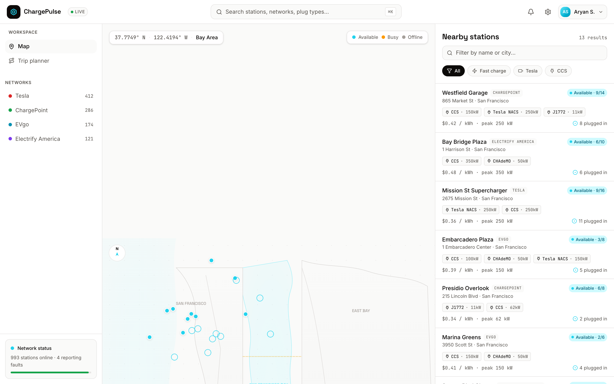
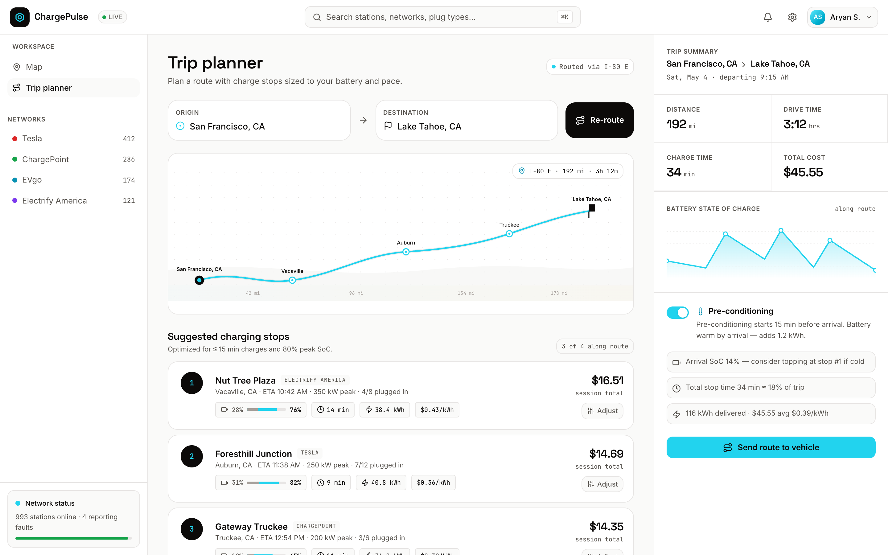
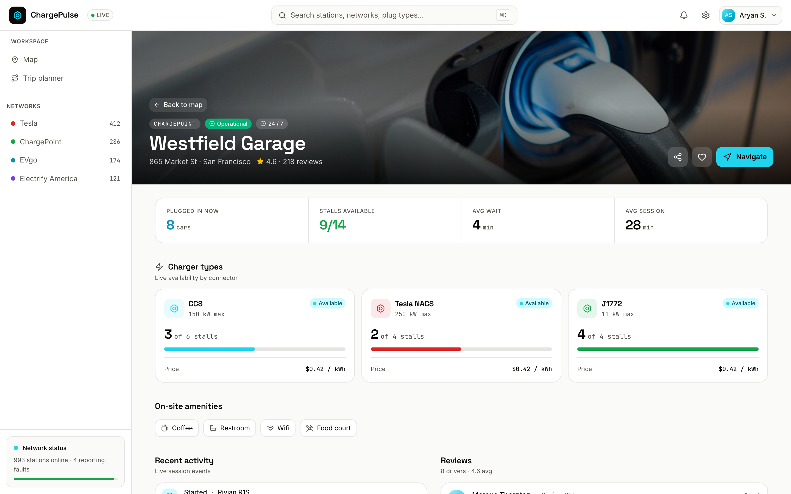

See what's actually free
Geospatial search surfaces nearby stations with live, connector-level status — available, in-use or offline — so you never drive to a dead plug.
Real-time OCPP statusReal-time availability across every network, traffic-aware routing, and a battery-aware trip planner — so you reach the right charger on the first try.
Live status via OCPP · CCS, CHAdeMO, Type 2 & NACS
Every connector · every major network
Connector-level station availability, streamed straight from an OCPP backend.
Occupied, available or offline — updated live.
Reduction in support tickets after launch.
Fewer "is this charger working?" calls.
Stations online in the live network status view.
In-product figure across the operator's network.
Three moves from anxious to arrived — each backed by real infrastructure, not guesswork.
Geospatial search surfaces nearby stations with live, connector-level status — available, in-use or offline — so you never drive to a dead plug.
Real-time OCPP statusThe trip planner places charge stops sized to your battery and pace, with traffic-aware ETAs and state-of-charge along the whole route.
Traffic-aware Directions APIVoice-guided turn-by-turn takes over on mobile, with offline tile caching so navigation holds through canyons and dead zones.
Voice nav + offline tilesReal screens from the shipped product — light, fast, and honest about what's available right now.
Every station across the Bay Area shows real-time availability by network. Markers pulse with live status so you can read a whole city at a glance.

Enter a destination and the planner drops charge stops matched to your battery and pace, with ETA, state-of-charge along the route, and pre-conditioning cues before you arrive.

Each station page lists connectors and live status, on-site amenities, and recent activity — so you know exactly what you're rolling up to.

Everything a driver needs to trust a charger before they commit the miles.
Narrow the map to exactly the plug you drive — CCS, CHAdeMO, Type 2 or Tesla NACS — with a tap.
Connector-level availability streamed from an OCPP backend — occupied, free or offline, always current.
Directions API routing accounts for live traffic, so ETAs and charge timing reflect the road you'll actually drive.
Hands-free turn-by-turn on mobile keeps your eyes on the road all the way to the plug.
Cached map tiles keep navigation alive through canyons, garages and dead zones — no signal required.
Track cost per kWh across past charges and read driver reviews before you trust a new station.
Plan on the web where the big map lives, then drive with the Flutter app — voice-guided and offline-ready when the signal isn't.
Bring Charge Pulse to your network, or talk to the team that shipped it. We'll walk you through the live map, the planner, and the OCPP backend behind it.
Prefer email? buildspacelabs@vruoom.com